[12-2] BKP备份寄存器&RTC实时时钟 — 学习笔记
- 课程：江协科技《STM32入门教程-2023版 细致讲解 中文字幕》
- 视频：BV1th411z7sn?p=42，44:43（2683 秒）
- 素材：244 帧关键帧（每 11 秒，宽 1280px）+ PP-OCRv4 画面硬字幕 OCR（455 段）；关键截图 16 张随笔记收录（源图在
vidsum_out/stm32_p42/frames/，站内图片在assets/images/stm32-42/） - 字幕情况：该集 B 站没有 CC/AI 字幕，文本由画面烧录的中文字幕 OCR 得到（source=subtitle-ocr）；错字主要是
晶振→ 「显振」（8 处）、数据→ 「数居」、存储→ 「存诸」、时间戳→ 「时间翟」、介绍→ 「乔绍」、TAMPER→ 「TAMIPER」、32 位→ 「32 为」，并混入手册页脚与英文正文——这些不是口述内容，已剔除/校正（清单见文末「存疑」）。 - 本集定位：这是模块 12 的理论课——先讲 BKP 备份寄存器、再讲 RTC 实时时钟（本节重点是 RTC），全程 PPT + 引脚定义表 + 数据手册（第 5 章 BKP、第 16 章 RTC）+ RCC 时钟树。本集零代码、零库函数（只出现寄存器名
BKP_DR17、RCC_APB1ENR、PWR_CR、RTC_CRL、RTC_CR等，没有BKP_WriteBackupRegister/RTC_SetCounter/RTC_WaitForSynchro之类调用）。结尾 44:42「……BKP 和 RTC 的代码部分」→ 代码在 [12-3]/[12-4]。
一句话结论
BKP（Backup Registers，备份寄存器）：可用于存储用户应用程序数据；当 VDD（2.0～3.6V）电源被切断时，它们仍然由 VBAT（1.8～3.6V）维持供电；当系统在待机模式下被唤醒，或系统复位/电源复位时，它们也不会被复位；TAMPER 引脚产生的侵入事件会将所有备份寄存器内容清除；RTC 引脚可输出 RTC 校准时钟、RTC 闹钟脉冲或者秒脉冲；存储 RTC 时钟校准寄存器；用户数据存储容量：20 字节（中容量和小容量）/ 84 字节（大容量和互联型）——每个数据寄存器 16 位＝2 字节，中/小容量是 DR1～DR10（20 字节），大容量/互联型再加上 DR11～DR42（84 字节）。BKP 本质上是 RAM 存储器——VBAT 也没电时数据就清零；「这个特性是显然要有的」，上一集也演示过。供电引脚：VDD/VSS1～3（数字部分）、VDDA/VSSA（模拟部分）这四组 VDD 开头的都是主电源，正常使用时全部接 3.3V；VBAT 是备用电池供电引脚，要用 BKP 和 RTC 就必须接备用电池，电池正极接 VBAT、负极与主电源共地。TAMPER 侵入检测（与 PC13、RTC 三功能共用 PC13，即 VBAT 旁边的 2 号脚）：设备需要防拆、BKP 里又存了敏感数据时，使能 TAMPER 引脚的侵入检测功能，设计电路时用一个默认上拉/下拉电阻、引一根线到设备外壳的防拆开关或触点——别人一拆开设备触发开关，STM32 就检测到侵入事件（数据自动清零并申请中断），你还可以在中断里清除其他存储器数据、把设备锁死，这样即使设备关机也能防拆。RTC（Real Time Clock，实时时钟）：是一个独立的定时器，可为系统提供时钟和日历功能；RTC 和时钟配置系统处于后备区域，系统复位时数据不清零，VDD 断电后可借助 VBAT 供电继续走时；32 位的可编程计数器可对应 Unix 时间戳的秒计数器；20 位的可编程预分频器可适配不同频率的输入时钟；三种 RTC 时钟源：HSE 时钟除以 128（通常为 8MHz/128）、LSE 振荡器时钟（通常为 32.768kHz）、LSI 振荡器时钟（40kHz）。为什么 RTC 没有年月日寄存器（对比 DS1302 那种外置 RTC 芯片）：因为用了时间戳——读时间是先读 32 位秒数、再用 localtime() 转年月日时分秒；写时间是用 mktime() 把年月日转成秒数、写入计数器；一个 32 位秒计数器就实现了年月日时分秒，极大简化硬件电路，代价是读写时要花一点软件计算资源。RCC 时钟树（图62）：OSC32_IN/OUT→LSE OSC 32.768kHz；OSC_IN/OUT→HSE 4～16MHz→/128；LSI RC 40kHz——经 RTCSEL[1:0] 选择进 RTCCLK，再送到 RTC；为什么选 32.768kHz：它是 2 的 15 次方（32768），便于分频得到 1Hz，而且这个频率是晶振工艺比较合适的频率。图154 简化的 RTC 框图：APB1 总线→APB1 接口（待机时不供电）；RTCCLK→RTC_PRL（重装载）→RTC_DIV（上升沿/自减）→TR_CLK→32 位可编程计数器 RTC_CNT；RTC_ALR 与 CNT 比较产生 RTC_Alarm；三路输出 RTC_Second / RTC_Overflow / RTC_Alarm → RTC_CR 的 SECF/SECIE、OWF/OWIE、ALRF/ALRIE → NVIC 中断控制器；WKUP pin（PA0）/WKP_STDBY→退出待机模式；后备区域标注「待机时维持供电」。预分频器细节：PRL 是重装载寄存器（计数目标）、DIV 是余数寄存器（自减计数器，存当前计数值）；写入 PRL＝N 表示 N+1 分频（因为计数值包含 0：写 6 是 7 分频、写 9 是 10 分频）；例：32.768kHz 输入 + PRL＝32767 → 32768 分频 → 1Hz——DIV 初始为 0，第一个时钟到来产生溢出、DIV 变为重装值 32767，之后每个时钟自减，减到 0 再溢出并重装。闹钟（ALR）：和 CNT 等宽，CNT 的值与 ALR 设定的闹钟值相等就代表闹钟响了（可执行相应操作/申请中断）；闹钟还兼具唤醒功能——可以把设备从待机模式唤醒（例如只在中午 12 点设一个闹钟唤醒，其余时间待机省电、避免频繁换电池）；这个闹钟值只能响一次，要周期性闹钟必须在每次响应后重新设置。Overflow（溢出）中断：来源是 CNT 进位（计满溢出那一刻）。外部电路两部分：① 备用电池供电——3V 纽扣电池正极接 VBAT、负极共地，数据手册 5.16 供电方案给了这个图；还有第二种方案加 0.1µF 电源滤波电容；4.1.2 电池备份区域有相关描述；如果没有外部电池，手册也给出推荐连接（电池与主电源都加）。② 32.768kHz RTC 晶振——晶振不分正负极，两端分别接 OSC32_IN/OSC32_OUT，起振电容本集取 10pF（作者自己的电路取值）；数据手册 5.3.6 外部时钟源特性 / 表23 / 图22 典型应用里给了 LSE 的电气参数（CL1/CL2 典型 15pF、RF 5MΩ 等）；最小系统板自带 RTC 晶振（板上黑色元件），并从右上角端口引出（需要备用电池时接上）。RTC 操作注意事项（手册原文 4 条，写代码时必须处理）：① 使能访问——设置 RCC_APB1ENR 的 PWREN 和 BKPEN 位（使能 PWR 和 BKP 时钟），再设置 PWR_CR 的 DBP 位（使能对 BKP 和 RTC 的访问）；注意 RTC 没有单独开时钟的选项（它不挂在正常外设时钟上）。② 读前等同步——若读取 RTC 寄存器时 RTC 的 APB1 接口曾处于禁止状态，软件必须先等待 RTC_CRL 的 RSF 位（寄存器同步标志）被硬件置 1（代码里就是「RTC 等待同步」）。③ 写前进配置模式——必须置 RTC_CRL 的 CNF 位使 RTC 进入配置模式，才能写 RTC_PRL、RTC_CNT、RTC_ALR（每个写寄存器的库函数都会自动加上这个操作）。④ 写前等上次写完——对 RTC 任何寄存器的写操作必须等前一次写操作结束，通过查询 RTC_CR 的 RTOFF 状态位判断是否处于更新中，仅当 RTOFF＝1 时才能写入（类似之前读写 Flash 的忙等待）。为什么有这些问题：RTC 寄存器由 RTCCLK 驱动，而 APB1 由 PCLK1 驱动，两个时钟不同步，且 PCLK1 在主电源掉电时会停止——所以要用 RSF 同步、用 RTOFF 等写完。手册精读：第 5 章 BKP（5.2 特性：20/84 字节后备寄存器、防侵入检测的控制/状态寄存器、RTC 校验值寄存器、PC13 上输出校准时钟/闹钟脉冲/秒脉冲；5.3.1 侵入检测：TAMPER 引脚信号从 0→1 或 1→0（取决于 BKP_CR 的 TPAL 位）产生侵入事件、侵入事件清除所有数据备份寄存器、边沿检测与允许位做逻辑与（所以允许前发生的事件也能被检测）、BKP_CSR 的 TPIE 置 1 时检测到侵入事件会产生中断、VDD 断电时侵入检测仍然有效、TAMPER 引脚应在片外接正确电平）；BKP 寄存器：DR1～DR10 @008h～028h、BKP_RTCCR @02Ch（ASOE/ASOS/CAL 的 6:0 位）、RTC_CR @030h（OWIE/ALRIE/TPIE/TPAL 等）、RTC_CSR @034h（TIF/OWF/ALRF 等）；第 16 章 RTC（功能描述、系统框图、读寄存器同步、写寄存器、图155/图156 溢出与闹钟波形示例（PR=0003）、寄存器描述：RTC_PRL 有效 20 位、RTC_DIV 余数、RTC_CNT、RTC_ALR——它们都是「高 16 位 + 低 16 位」两个寄存器拼接，因为外设总线只有 16 位，这样做是简化电路设计，对这些不那么重要的外设，16 位总线已经够用）。
0. 本集定位：理论课（BKP + RTC 外设原理 + 手册 5/16 章），代码在 12-3/12-4
- 本集零代码、零库函数：全程 PPT + 手册 + 时钟树；只讲寄存器名和操作流程；
- 本集先讲 BKP（内容少、要求不高），再讲 RTC（本节重点）；
- 片尾 44:42「……BKP 和 RTC 的代码部分」→ 库函数写法在 [12-3]/[12-4]。
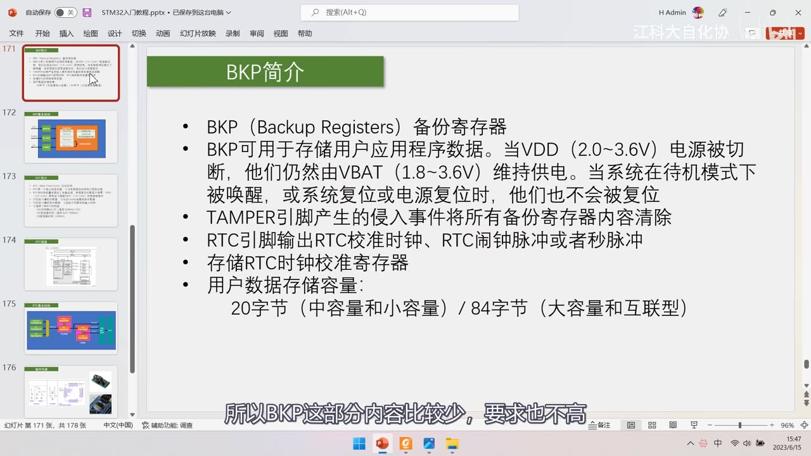
*图 1：PPT「BKP简介」——BKP（Backup Registers）备份寄存器；可用于存储用户应用程序数据，当 VDD（2.0～3.6V）电源被切断，他们仍然由 VBAT（1.8～3.6V）维持供电；当系统在待机模式下被唤醒，或系统复位或电源复位时，他们也不会被复位；TAMPER 引脚产生的侵入事件将所有备份寄存器内容清除；RTC 引脚输出 RTC 校准时钟、RTC 闹钟脉冲或者秒脉冲；存储 RTC 时钟校准寄存器；用户数据存储容量：20 字节（中容量和小容量）/ 84 字节（大容量和互联型）；字幕「所以BKP这部分内容比较少，要求也不高」*
1. BKP 备份寄存器
1.1 供电引脚与 VBAT
- 引脚定义图里标红的是供电引脚：VDD/VSS1～3 是内部数字部分电路供电、VDDA/VSSA 是内部模拟部分电路供电——这四组以 VDD 开头的供电都是系统的主电源，正常使用时全部要接到 3.3V；
- VBAT 是备用电池供电引脚：要使用 STM32 内部的 BKP 和 RTC，这个引脚就必须接备用电池，用来在 VDD 主电源掉电后维持 BKP 和 RTC 的供电；
- 接法：备用电池只有一根正极供电引脚，电池正极接 VBAT，电池负极与主电源负极接在一起共地；
- 最小系统板原理图里能看到 VBAT 与主电源的接法，以及 Y3 32.768K 晶振 + 20pF 起振电容接 PC14/PC15。
1.2 VBAT 的作用与 BKP 的本质
- VBAT 的作用：当 VDD 断电时，由 VBAT 维持 BKP 和 RTC 的运行；
- 如果 VBAT 也没电了：BKP 里的数据就会清零——因为 BKP 本质上是 RAM 存储器（掉电即失）；
- 这一点上一集也演示过实验现象（VBAT 一断就清零）。
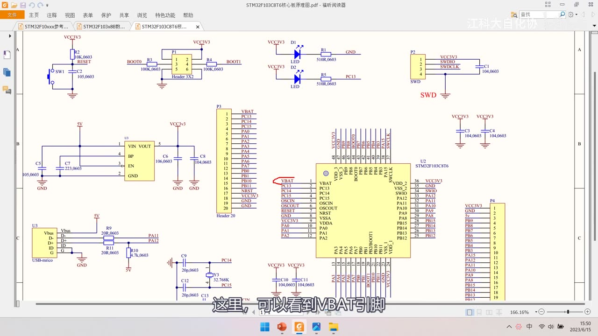
图 2：最小系统板原理图（STM32F103C8T6 核心板）——U2 为核心芯片，右侧引出 VBAT、PC13-TAMPER-RTC、PC14-OSC32_IN、PC15-OSC32_OUT、PD0/PD1、OSC_IN/OSC_OUT、NRST、VSSA、VDDA、PA0-WKUP 等；Y3 32.768K 晶振与 C12/C13 20pF 起振电容接 PC14/PC15；字幕「这里，可以看到VBAT引脚」
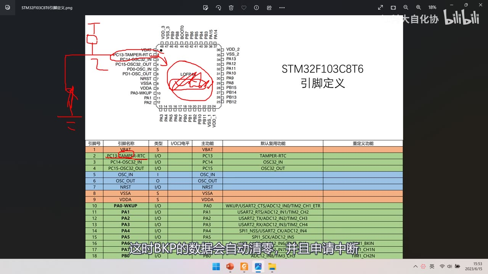
图 3：STM32F103C8T6 引脚定义表——表头为 引脚号/引脚名称/类型/I-O 电平/主功能/默认复用功能/重定义功能；1=VBAT（S 电源）、2=PC13-TAMPER-RTC（I/O）、3=PC14-OSC32_IN、4=PC15-OSC32_OUT、5=OSC_IN、6=OSC_OUT、7=NRST、8=VSSA、9=VDDA、10=PA0-WKUP 等；红笔圈出 LQFP 封装与 VBAT 走线；字幕「这时BKP的数据会自动清零，并且申请中断」
1.3 TAMPER 侵入检测（PC13 三功能共用）
- PC13 是三个功能共用的引脚：PC13、TAMPER、RTC（引脚定义里写作
PC13-TAMPER-RTC），位置就是 VBAT 旁边的 2 号引脚； - 应用场景：设备需要防拆、BKP 里又存了敏感数据（不能被窃取/篡改）→ 使能 TAMPER 引脚的侵入检测功能；
- 电路：设计时给该引脚默认的上拉或下拉电阻，再引一根线到设备外壳的防拆开关/触点；
- 动作：别人一拆开设备就触发开关 → STM32 检测到侵入事件（BKP 数据自动清零并申请中断）；
- 进一步保护：可以在中断里清除其他存储器数据、把设备锁死，从而保障设备安全——这样即使设备关机也能防拆。
1.4 RTC 相关功能与存储容量
- RTC 引脚（也在 PC13）：可输出 RTC 校准时钟、RTC 闹钟脉冲或秒脉冲（供外部设备测量、校准 RTC）；
- BKP 里还存储 RTC 时钟校准寄存器：可以对 RTC 进行校准（本质是 RTC 的配置）；
- 容量：每个数据寄存器 16 位＝2 字节；中容量和小容量设备有 DR1～DR10 → 共 20 字节；大容量和互联型设备在 DR1～DR10 之外再加 DR11～DR42 → 共 84 字节；
- BKP 的容量其实非常小（作者提醒），只适合存少量关键数据。
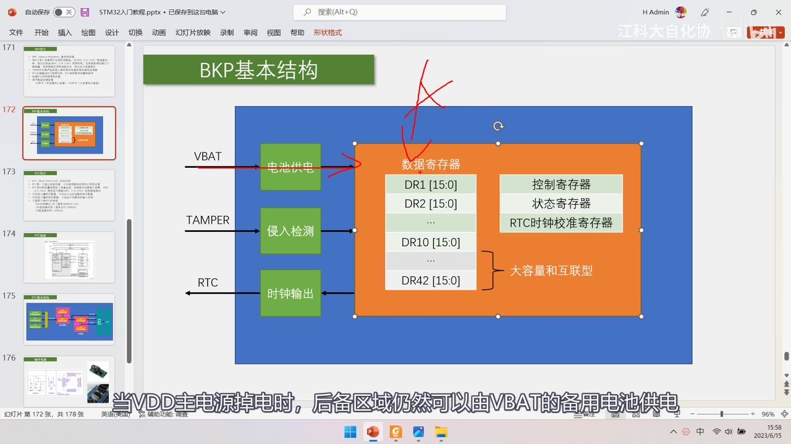
图 4：PPT「BKP基本结构」——左侧 VBAT→电池供电、TAMPER→侵入检测、RTC→时钟输出；右侧后备区域（蓝框内）含数据寄存器 DR1[15:0]、DR2[15:0]…DR10[15:0]、…、DR42[15:0]（大容量和互联型），以及*控制寄存器、状态寄存器、RTC 时钟校准寄存器；红笔在上方画叉标注；字幕「当VDD主电源掉电时，后备区域仍然可以由VBAT的备用电池供电」*
2. RTC 实时时钟
2.1 简介与特性
- RTC（Real Time Clock）实时时钟：是一个独立的定时器，可为系统提供时钟和日历功能；
- RTC 和时钟配置系统处于后备区域：系统复位时数据不清零、VDD（2.0～3.6V）断电后可借助 VBAT（1.8～3.6V）供电继续走时；
- 32 位可编程计数器：可对应 Unix 时间戳的秒计数器；
- 20 位可编程预分频器：可适配不同频率的输入时钟（保证分频后输出 1Hz 给计数器）；
- 三种 RTC 时钟源：
| 时钟源 | 频率 | 说明 |
|---|---|---|
| HSE 时钟除以 128 | 通常 8MHz/128 | 外部高速时钟分频（作者未念出结果） |
| LSE 振荡器时钟 | 通常 32.768kHz | 外部低速时钟（RTC 晶振），最常用 |
| LSI 振荡器时钟 | 40kHz | 内部低速时钟，精度较低、不需要外部晶振 |
2.2 为什么没有年月日寄存器
- 对比以前学的 DS1302（外置 RTC 芯片）：那里面有年月日寄存器，写入对应寄存器就是修改时间、读取对应寄存器就是获取时间；
- 看到 STM32 的 RTC 只有一个 32 位计数器，会疑惑「那年呢、月呢、日呢、小时呢、分钟呢」——因为这里用了时间戳；
- 读时间：先读 32 位秒数 → 用
time.h的localtime()转成年月日时分秒； - 写时间：用
mktime()把年月日转成秒数 → 再写入这个 32 位计数器； - 好处：
一个 32 位的秒计数器就能实现年月日时分秒的计时，极大简化硬件电路设计；代价：每次读写都要花一点软件计算资源。
2.3 RCC 时钟树：RTCCLK 从哪来
- RTC 的输入时钟 RTCCLK 需要在 RCC 里配置（图62 时钟树）：
- OSC32_IN/OSC32_OUT → LSE OSC 32.768kHz；
- OSC_IN/OSC_OUT → HSE 4～16MHz → /128；
- LSI RC 40kHz；
- 三者经 RTCSEL[1:0] 选择后接到 RTCCLK → RTC；
- 为什么选 32.768kHz：32768 是 2 的 15 次方，便于分频得到 1Hz；而且这个频率是晶振工艺比较合适的频率（并非随便选的）；
- 上下两路时钟（HSE/128、LSE）在主电源断电后仍可由 VBAT 后备区域维持（LSI 是内部 RC，也在后备域）。
2.4 图154：简化的 RTC 框图
- APB1 总线 → APB1 接口（图上注明「待机时不供电」）——程序通过 APB1 读写 RTC 寄存器；
- RTCCLK → RTC_PRL（重装载寄存器）→ RTC_DIV（上升沿触发）→ TR_CLK → 32 位可编程计数器 RTC_CNT；
- 还有 RTC_ALR（闹钟值），与 CNT 比较 → RTC_Alarm；
- 三路事件输出：RTC_Second、RTC_Overflow、RTC_Alarm →
RTC_CR的 SECF/SECIE、OWF/OWIE、ALRF/ALRIE（F 结尾是标志位、IE 结尾是中断使能）→ NVIC 中断控制器； - WKUP pin（PA0）/WKP_STDBY → 退出待机模式（WKUP 引脚兼具唤醒功能，下一节再学）；
- 图里多处标注「待机时维持供电」——说明后备区域在待机/主电源断电时由 VBAT 维持。
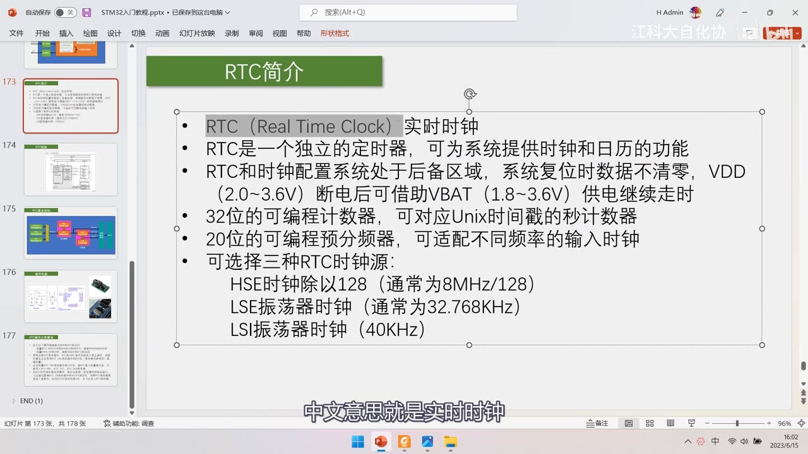
*图 5：PPT「RTC简介」——RTC（Real Time Clock）实时时钟；RTC 是一个独立的定时器，可为系统提供时钟和日历的功能；RTC 和时钟配置系统处于后备区域，系统复位时数据不清零，VDD（2.0～3.6V）断电后可借助 VBAT（1.8～3.6V）供电继续走时；32 位的可编程计数器，可对应 Unix 时间戳的秒计数器；20 位的可编程预分频器，可适配不同频率的输入时钟；可选择三种 RTC 时钟源：HSE 时钟除以 128（通常为 8MHz/128）、LSE 振荡器时钟（通常为 32.768kHz）、LSI 振荡器时钟（40kHz）；字幕「中文意思就是实时时钟」*
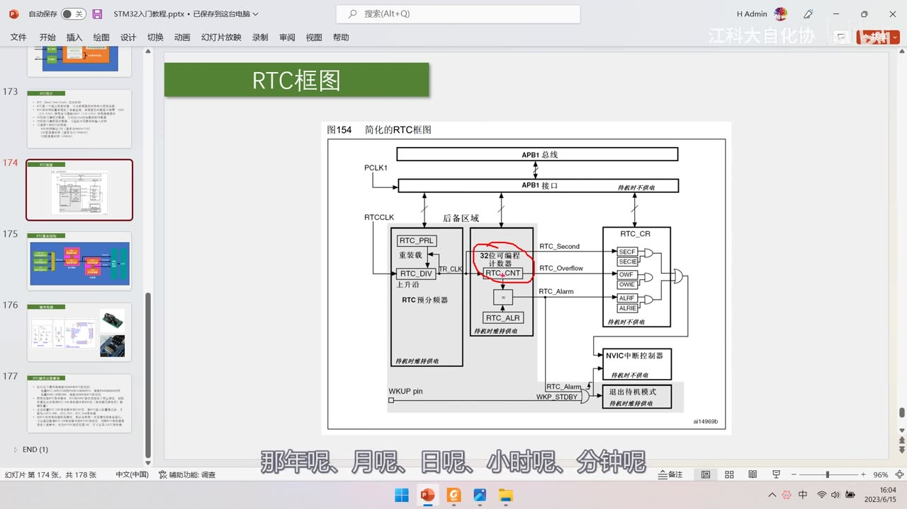
图 6：PPT「RTC框图」图154 简化的 RTC 框图——APB1 总线→APB1 接口（待机时不供电）；RTCCLK→RTC_PRL 重装载→RTC_DIV（上升沿）→TR_CLK→32 位可编程计数器 RTC_CNT（红圈标出）；RTC_ALR；RTC_Second/RTC_Overflow/RTC_Alarm→RTC_CR（SECF/SECIE、OWF/OWIE、ALRF/ALRIE）；NVIC 中断控制器；WKUP pin/WKP_STDBY→退出待机模式；多处标注「待机时维持供电」；字幕「那年呢、月呢、日呢、小时呢、分钟呢」
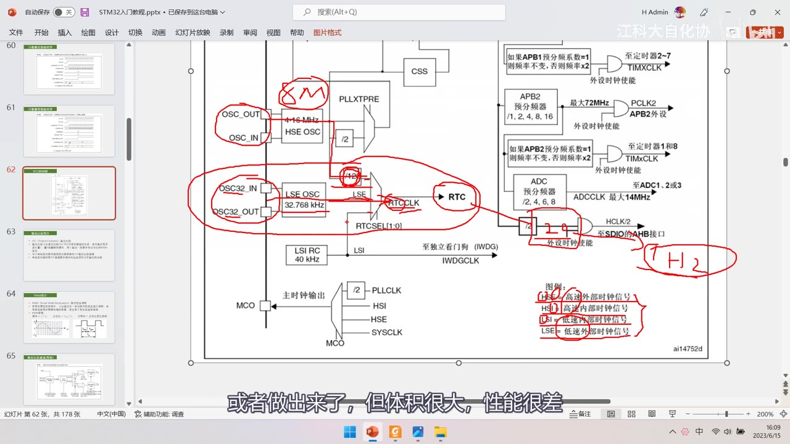
*图 7：RCC 时钟树（图62）+ 红笔标注——OSC_IN/OUT→HSE OSC 4～16MHz（红笔写「8M」）→/128；OSC32_IN/OUT→LSE OSC 32.768kHz（红圈）→RTCSEL[1:0]→RTCCLK→RTC（红圈）；LSI RC 40kHz；右侧红笔标「H/2」；图例：HSI 高速内部时钟、HSE 高速外部时钟、LSI 低速内部时钟、LSE 低速外部时钟；字幕「或者做出来了，但体积很大，性能很差」*
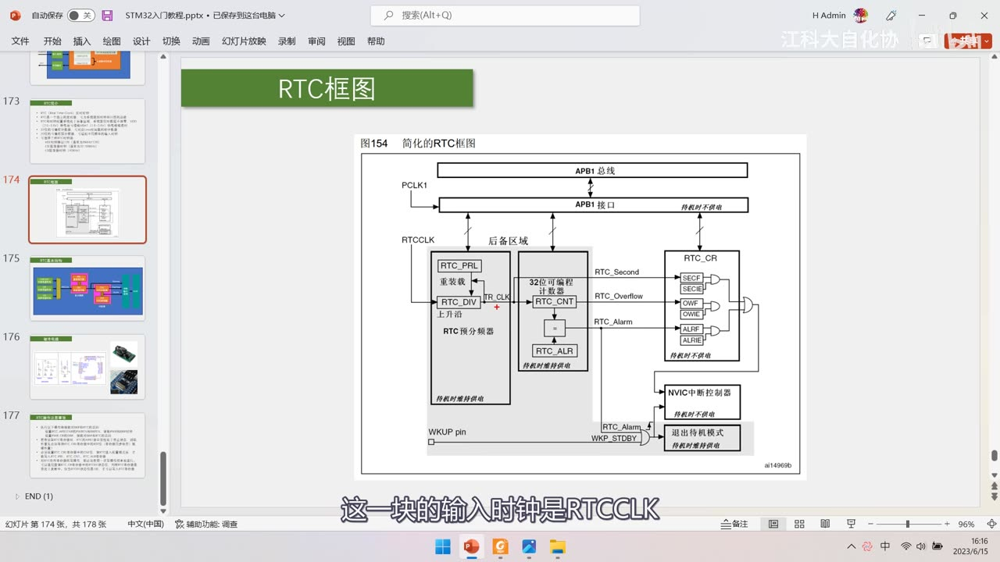
图 8：图154 全图（清晰版，无标注）——APB1 总线/接口、RTCCLK、RTC_PRL 重装载、RTC_DIV 上升沿、TR_CLK、32 位可编程计数器 RTC_CNT、RTC_ALR、RTC_Second/Overflow/Alarm、RTC_CR（SECF/SECIE、OWF/OWIE、ALRF/ALRIE）、NVIC 中断控制器、WKUP pin/WKP_STDBY、退出待机模式；字幕「这一块的输入时钟是RTCCLK」
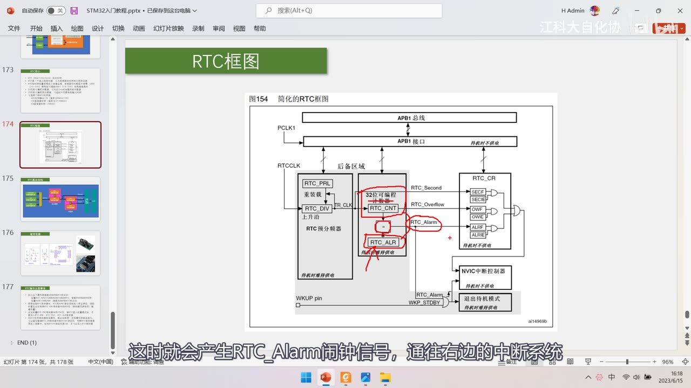
图 9：图154 + 红圈标注——RTC_CNT 与 RTC_ALR 比较处、RTC_Alarm 信号线被红圈圈出；字幕「这时就会产生RTC_Alarm闹钟信号，通往右边的中断系统」
2.5 预分频器与计数器细节
- 预分频器由两个寄存器组成：
RTC_PRL重装载寄存器（计数目标，决定分频值）和RTC_DIV余数寄存器（自减计数器，存当前计数值）——和之前定时器的时基单元类似； - 关键算式：写入 PRL＝N 表示 N+1 分频（因为计数值包含 0）：
- 写 6 → 7 分频；写 9 → 10 分频；
- 例：输入 32.768kHz，PRL＝32767 → 32768 分频 → 输出 1Hz（保证计时正确）；
- DIV 的工作过程：初始值为 0 → 第一个输入时钟到来时产生溢出信号给后续电路，同时 DIV 变为重装值 32767 → 第二个时钟变 32766 → …… → 减到 0 再溢出并重装，如此循环往复；
- 计数器（CNT/ALR）：CNT 是 32 位，ALR 与它等宽；当 CNT 的值与 ALR 设定的闹钟值相等时，就代表闹钟响了（会产生 RTC_Alarm、可执行相应操作）；
- 闹钟的唤醒功能：闹钟信号可以把设备从待机模式唤醒——例如只在中午 12 点设一个闹钟唤醒，其余时间芯片待机以节省电量、避免频繁换电池；
- 闹钟是一次性的：这个闹钟值只能响一次，要周期性闹钟必须在每次响应后重新设置；
- Overflow（溢出）中断：来源是 CNT 的进位——32 位计满的那一刻触发。
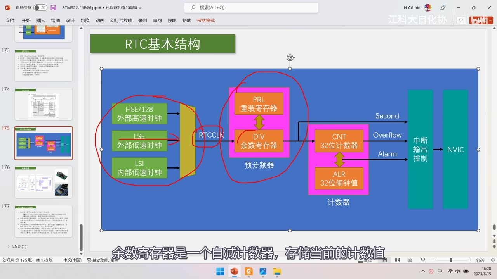
图 10：PPT「RTC基本结构」（作者自绘）——左侧 HSE/128 外部高速时钟、LSE 外部低速时钟、LSI 内部低速时钟（红圈）→选择器→RTCCLK；中间*预分频器：PRL 重装寄存器 / DIV 余数寄存器（红圈）；右侧计数器：CNT 32 位计数器 / ALR 32 位闹钟值；输出 Second/Overflow/Alarm → 中断输出控制 → NVIC；字幕「余数寄存器是一个自减计数器，存储当前的计数值」*
3. 外部电路
3.1 备用电池供电
- 最简单方案：一个 3V 电池，正极直接引到 STM32 的 VBAT 引脚、负极与主电源共地——数据手册 5.16 供电方案里给出了这个图；
- 第二种方案：在 VBAT 处再加一个 0.1µF 的电源滤波电容；
- 相关手册小节：4.1.2 电池备份区域有详细描述；
- 如果没有外部电池：手册给出推荐连接（电池与主电源都加）。
3.2 32.768kHz RTC 晶振
- 一个 32.768kHz 的 RTC 晶振（晶振不分正负极），两端分别接 OSC32_IN / OSC32_OUT；
- 起振电容：本集作者给的电路用 10pF（这是他自己电路的取值）；数据手册 5.3.6 外部时钟源特性 / 表23 / 图22 里给出 LSE 的电气参数与典型应用（建议的负载电容 CL1/CL2 典型值为 15pF、反馈电阻 RF 典型 5MΩ、驱动电流 1.4µA、启动时间典型 3s）；
- 实物：纽扣电池印字那面有「+」号标注，比较小的那个电极是负极；32.768kHz 晶振在钟表里很常见（拆开钟表就能看到）；
- 最小系统板：这块板自带 RTC 晶振电路（板上那个黑色元件就是这种样式的 RTC 晶振），并从右上角端口引出——需要备用电池时可以从这里接（或者把 3.3V 主电源接在这里，等于不用电池）。
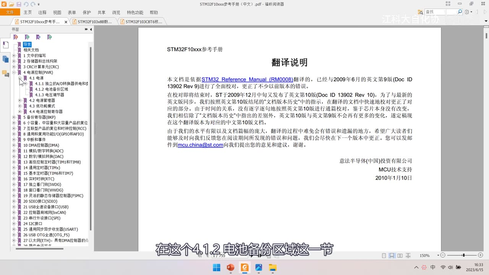
图 11：参考手册「翻译说明」页，左侧书签高亮 4.1.2 电池备份区域——讲备用电池供电方案时定位到手册这一节；字幕「在这个4.1.2电池备份区域这一节」
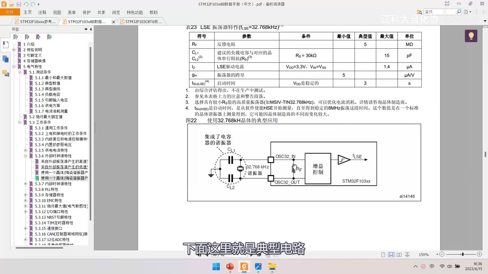
*图 12：数据手册「表23 LSE 振荡器特性（fLSE=32.768kHz）」与「图22 使用 32.768kHz 晶体的典型应用」——表：反馈电阻 RF 典型 5MΩ、建议的负载电容与对应晶体串行阻抗（RS=30kΩ 时 CL1/CL2 典型 15pF）、LSE 驱动电流典型 1.4µA、振荡器跨导 5µA/V、启动时间典型 3s；图：OSC32_IN/OSC32_OUT、CL1/CL2、32.768kHz 谐振器、RF、增益控制、fLSE、STM32F103xx；左侧书签 5.3.6 外部时钟源特性；字幕「下面这里就是典型电路」*
4. RTC 操作注意事项（手册 4 条）
这四条是从手册原文复制过来的，写代码时必须处理。
- 使能对 BKP 和 RTC 的访问：设置
RCC_APB1ENR的 PWREN 和 BKPEN 位（使能 PWR 和 BKP 时钟），设置PWR_CR的 DBP 位（使能对 BKP 和 RTC 的访问）；- 注意：RTC 并没有单独「开时钟」的选项——它是后备区域外设，所以要先开 PWR + BKP 时钟，再开 DBP 访问许可；
- 读前等待同步：若在读取 RTC 寄存器时，RTC 的 APB1 接口曾经处于禁止状态，则软件必须先等待
RTC_CRL的 RSF 位（寄存器同步标志）被硬件置 1——对应代码里的「RTC 等待同步」； - 写前进入配置模式：必须设置
RTC_CRL的 CNF 位，使 RTC 进入配置模式后，才能写入RTC_PRL、RTC_CNT、RTC_ALR寄存器（库函数里每个写寄存器的函数都自动加了这一步）； - 写前等待上一次写完：对 RTC 的任何寄存器写操作，都必须在前一次写操作结束后进行——通过查询
RTC_CR的 RTOFF 状态位判断 RTC 寄存器是否处于更新中，仅当 RTOFF 状态位是 1 时，才可以写入（类似之前读写 Flash 芯片时等待忙状态）。
为什么要这么麻烦（根因）：
- RTC 寄存器由 RTCCLK 驱动，APB1 总线由 PCLK1 驱动，两个时钟不同步——直接用 PCLK1 驱动的总线去读 RTCCLK 驱动的寄存器，存在时钟不同步问题，所以要等 RSF 同步；
- PCLK1 在主电源掉电时会停止，而 RTC 要继续走——所以访问前要让接口与 RTC 时钟对齐；
- RTC 写操作本身需要时间（它按 RTCCLK 节拍更新），所以要等 RTOFF=1 表示上一次写入真的完成了。
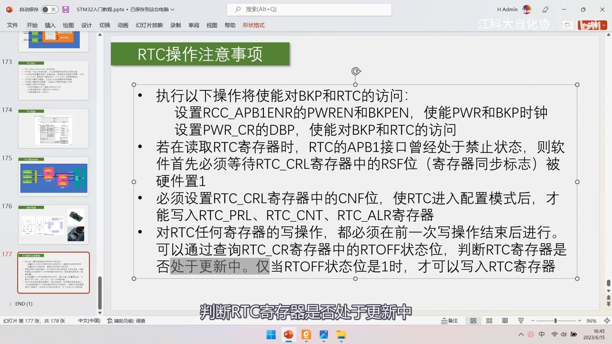
图 13：PPT「RTC操作注意事项」（手册原文 4 条）——①执行以下操作将使能对 BKP 和 RTC 的访问：设置 RCC_APB1ENR 的 PWREN 和 BKPEN，使能 PWR 和 BKP 时钟；设置 PWR_CR 的 DBP，使能对 BKP 和 RTC 的访问；②若在读取 RTC 寄存器时 RTC 的 APB1 接口曾经处于禁止状态，则软件首先必须*等待 RTC_CRL 寄存器中的 RSF 位（寄存器同步标志）被硬件置 1；③必须设置 RTC_CRL 寄存器中的 CNF 位，使 RTC 进入配置模式后，才能写入 RTC_PRL、RTC_CNT、RTC_ALR 寄存器；④对 RTC 任何寄存器的写操作，都必须在前一次写操作结束后进行——可以查询 RTC_CR 寄存器中的 RTOFF 状态位判断是否处于更新中，仅当 RTOFF 是 1 时才可以写入；字幕「判断RTC寄存器是否处于更新中」*
5. 手册精读
5.1 第 5 章 BKP
- 5.2 BKP 特性：20 字节数据后备寄存器（中容量和小容量产品）或 84 字节（大容量和互联型产品）；用来管理防侵入检测并具有中断功能的状态/控制寄存器；用来存储 RTC 校验值的校验寄存器；在 PC13 引脚（当该引脚不用于侵入检测时）上输出 RTC 校准时钟、RTC 闹钟脉冲或者秒脉冲；
- 5.3.1 侵入检测：
- 当 TAMPER 引脚上的信号从 0 变成 1 或从 1 变成 0（取决于备份控制寄存器
BKP_CR的 TPAL 位）会产生一个侵入检测事件，侵入检测事件将所有数据备份寄存器内容清除； - 为避免丢失侵入事件，侵入检测信号是边沿检测的信号与侵入检测允许位的逻辑与——所以在侵入检测引脚被允许之前发生的侵入事件也能被检测到；
- 当 TPAL=0 时：如果在启动侵入检测（设置 TPE 位）时该引脚已经是高电平，启动瞬间会产生一个额外的侵入事件；
- 当 TPAL=1 时：如果在启动侵入检测前该引脚已经是低电平，同样会产生一个额外的侵入事件；
- 设置
BKP_CSR寄存器的 TPIE 位为 1，检测到侵入事件时就会产生一个中断； - 注：当 VDD 电源断开时，侵入检测功能仍然有效；为了避免不必要的复位/数据备份寄存器，TAMPER 引脚应该在片外连接到正确的电平；
- 当 TAMPER 引脚上的信号从 0 变成 1 或从 1 变成 0（取决于备份控制寄存器
- BKP 寄存器：
BKP_DR1～BKP_DR10（008h～028h 各 D[15:0]）、BKP_RTCCR@02Ch（ASOE/ASOS/CAL 的 6:0 位）、RTC_CR@030h、RTC_CSR@034h；存储器映像里 DR1～DR10 是连在一起的，大容量/互联型还有 DR11～DR42。
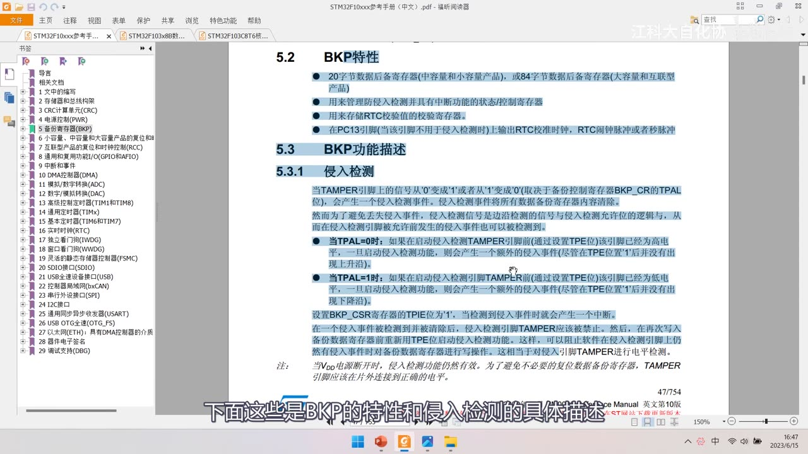
*图 14：手册「5.2 BKP特性 / 5.3 BKP功能描述 / 5.3.1 侵入检测」——20 字节数据后备寄存器（中容量和小容量产品），或 84 字节（大容量和互联型产品）；用来管理防侵入检测并具有中断功能的状态/控制寄存器；用来存储 RTC 校验值的校验寄存器；在 PC13 引脚上输出 RTC 校准时钟、RTC 闹钟脉冲或秒脉冲；侵入检测：TAMPER 引脚信号从 0 变 1 或 1 变 0（取决于 BKP_CR 的 TPAL 位）产生侵入检测事件、侵入检测事件将所有数据备份寄存器内容清除；TPAL=0/TPAL=1 两种情况下启动检测时可能产生额外侵入事件；设置 BKP_CSR 的 TPIE 位为 1 时检测到侵入事件会产生中断；注：当 VDD 电源断开时侵入检测功能仍然有效，TAMPER 引脚应在片外接正确电平；字幕「下面这些是BKP的特性和侵入检测的具体描述」*
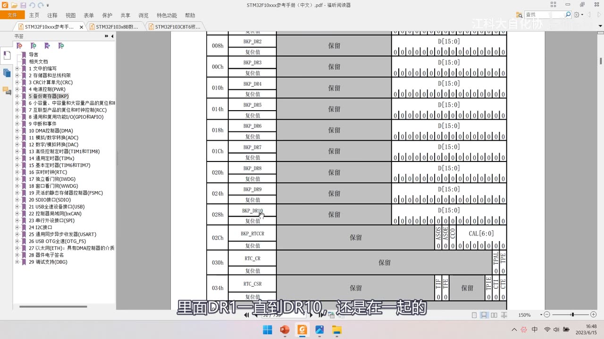
*图 15：手册 BKP/RTC 寄存器表——008h BKP_DR2 … 028h BKP_DR10（各 D[15:0]）；02Ch BKP_RTCCR（ASOE、ASOS、CAL[6:0]）；030h RTC_CR（TPAL、TPIE 等）；034h RTC_CSR（TIF、OWF、ALRF 等）；左侧为手册书签目录；字幕「里面DR1一直到DR10，还是在一起的」*
5.2 第 16 章 RTC
- 功能描述、系统框图（16.3.2）：「这些我们都仔细分析过」；
- 读寄存器的同步、写寄存器：就是操作注意事项里那两条的详细描述；
- 图155/图156：溢出与闹钟波形示例（PR=0003）：
- 图155：
RTC_PR=0003（4 分频）、RTC_Second、RTC_CNT0000→0005 递增、RTC_ALARM、ALRF；闹钟在 CNT 等于闹钟值期间的最末尾触发（与秒信号上升沿同步），闹钟标志位 ALRF 也在此时刻置 1 挂起； - 图156：
RTC_CNT从 FFFFFFFB→FFFFFFFC→FFFFFFFD→FFFFFFFE→FFFFFFFF→0000，计满之后产生 RTC_Overflow，OWF 溢出标志置 1 挂起；
- 图155：
- 寄存器描述：
RTC_PRL有效 20 位（高 16 位里只有 4 位有用）、RTC_DIV（余数寄存器，20 位自减计数器）、RTC_CNT、RTC_ALR——都是「高 16 位 + 低 16 位」两个寄存器拼接：- 为什么这样设计：这个外设总线只有 16 位；为了简化电路设计，对这些不那么重要的外设，16 位的总线已经够用了；所以一个「32 位寄存器」实际上是两个 16 位寄存器。
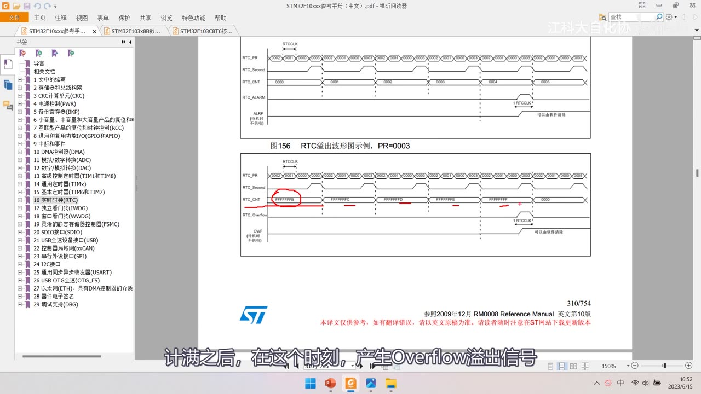
图 16：手册「图156 RTC溢出波形图示例，PR=0003」与上方图155——RTC_PR=0003、RTC_Second、RTC_CNT 0000→0005、RTC_ALARM、ALRF（上图）；下图溢出：RTC_CNT FFFFFFFB→FFFFFFFC→FFFFFFFD→FFFFFFFE→FFFFFFFF→0000、RTC_Overflow、OWF（可由软件清除）；红笔标 FFFFFFFB 处；字幕「计满之后，在这个时刻，产生Overflow溢出信号」
坑与易错点
- BKP 本质是 RAM：VBAT 也没电就清零——它不是真正的「永不掉电」存储器。
- 要用 BKP/RTC 必须接备用电池到 VBAT，且电池负极与主电源共地。
- PC13 是三功能共用引脚（PC13/TAMPER/RTC），也是 VBAT 旁边的 2 号脚——用之前要想清楚分配给谁。
- TAMPER 侵入事件会清空所有备份寄存器：别把不重要的东西和敏感数据混在一起指望它保命。
- 容量口径：中/小容量 20 字节（DR1～DR10）、大容量/互联型 84 字节（+DR11～DR42）；每个寄存器 16 位＝2 字节。
- RTC 没有单独开时钟的选项：要先开 PWR+BKP 时钟，再置 DBP 才能访问。
- 读 RTC 前要等 RSF（寄存器同步标志），否则读到的值可能不对（代码里对应「RTC 等待同步」）。
- 写 RTC 前要置 CNF 进配置模式，写完再退出（库函数自动做）。
- 写 RTC 前要等 RTOFF=1（上一次写真的结束），类似 Flash 忙等待。
- PRL＝N 是 N+1 分频：32.768kHz 用 PRL=32767 → 1Hz，别写成 32768。
- 闹钟只响一次：要周期性闹钟必须每次重新设置 ALR。
- 三种时钟源：HSE/128（通常 8MHz/128）、LSE 32.768kHz、LSI 40kHz；32.768kHz 是为了方便分频到 1Hz。
- RTC 寄存器是「高 16 位 + 低 16 位」拼接，因为外设总线只有 16 位；PRL 实际只有 20 位有效。
- 起振电容：本集作者电路用 10pF、板载最小系统板原理图为 20pF、手册表23 典型值是 15pF——三个出处别混写。
- 本集没讲中断函数/NVIC 配置，也没展开 WKUP 细节（WKUP=PA0，下一节讲）。
时间轴
| 时间 | 内容 |
|---|---|
| 0:02 | 开场，先学 BKP 相关知识点 |
| 0:10 | 然后再学 RTC 的知识点 |
| 0:13 | 本节重点是 RTC |
| 0:28 | 先看 BKP 的部分 |
| 0:32 | BKP 英文是 Backup Registers |
| 0:45 | 这些存储器可以存储用户应用程序数据 |
| 0:53 | 当 VDD 电源被切断 |
| 0:55 | 它们仍然由 VBAT 维持供电 |
| 1:16 | 看一下引脚定义图 |
| 1:18 | 标红色的部分是供电引脚 |
| 1:21 | VDD 和 VSS 1、2、3 是数字部分供电 |
| 1:28 | VDDA 和 VSSA 是模拟部分供电 |
| 1:34 | 这四组 VDD 开头的供电都是主电源 |
| 1:38 | 正常使用时这四组都要接 3.3V |
| 1:44 | 最上面还有一个引脚 VBAT |
| 1:49 | 这就是备用电池供电引脚 |
| 1:50 | 要用内部的 BKP 和 RTC |
| 1:54 | 这个引脚就必须接备用电池 |
| 1:56 | 用来维持 VDD 掉电后的供电 |
| 2:01 | 备用电池只有一根正极供电引脚 |
| 2:05 | 电池正极接 VBAT |
| 2:08 | 电池负极和主电源负极接一起共地 |
| 2:13 | 然后看最小系统板的原理图 |
| 2:40 | VBAT 和主电源的接法 |
| 2:52 | 主电源和备用电源就清楚了 |
| 2:56 | 回到 PPT |
| 2:57 | VBAT 的作用是当 VDD 断电时 |
| 3:06 | 如果 VBAT 也没电呢 |
| 3:09 | BKP 里的数据就会清零 |
| 3:12 | 因为 BKP 本质上是 RAM 存储器 |
| 3:22 | 这个特性是显然要有的 |
| 3:35 | 上一小节也演示过实验现象 |
| 3:52 | 它接到 STM32 外部的引脚 |
| 3:56 | 它的位置可以看引脚定义 |
| 3:59 | 这里是 PC13-TAMPER-RTC |
| 4:07 | 也就是 PC13、TAMPER、RTC 三功能共用 |
| 4:09 | 引脚位置就是 VBAT 旁边的 2 号引脚 |
| 4:19 | 设备需要有防拆功能 |
| 4:21 | BKP 里也存了些敏感数据 |
| 4:24 | 这些数据不能被窃取或篡改 |
| 4:27 | 那就可以使能 TAMPER 侵入检测 |
| 4:32 | 设计电路时用默认上拉或下拉电阻 |
| 4:37 | 然后引一根线到外壳的防拆开关 |
| 4:41 | 别人一拆开设备触发开关 |
| 4:46 | STM32 就检测到侵入事件了 |
| 4:53 | 在中断里还可以继续保护设备 |
| 4:56 | 比如清除其他存储器数据、设备锁死 |
| 4:59 | 这样来保障设备安全 |
| 5:05 | 即使设备关机也能防拆 |
| 5:08 | 这就是 TAMPER 侵入检测的功能 |
| 5:19 | RTC 引脚也是在 PC13 这个位置 |
| 5:33 | 外部设备可以测量 RTC 校准时钟 |
| 5:56 | 还能存储 RTC 时钟校准寄存器 |
| 6:03 | 可以对 RTC 进行校准 |
| 6:07 | 实际上就是 RTC 的配置 |
| 6:31 | BKP 是 20 个字节 |
| 6:35 | 在大容量和互联型设备里 |
| 6:43 | BKP 的容量其实非常小 |
| 6:53 | 下面看 BKP 的基本结构 |
| 6:59 | BKP 处于后备区域 |
| 7:01 | 但后备区域不只有 BKP，还有 RTC 相关电路 |
| 7:27 | BKP 是位于后备区域的 |
| 7:40 | 每个数据寄存器都是 16 位的 |
| 7:43 | 一个数据寄存器可以存 2 个字节 |
| 7:46 | 中容量和小容量设备里有 DR1 |
| 7:59 | 就是上面说的 20 字节 |
| 8:02 | 大容量和互联型设备除了 DR1 到 DR10 |
| 8:07 | 还有 DR11 |
| 8:16 | 就是上面说的 84 字节 |
| 8:19 | BKP 还有几个功能 |
| 8:28 | 当 TAMPER 产生上升沿或下降沿时 |
| 8:54 | 继续学习 RTC 外设 |
| 9:13 | RTC 一般指提供年月日时分秒的计时装置 |
| 9:26 | DS1302 是外置的 RTC 芯片 |
| 9:29 | 它可以独立计时 |
| 9:30 | 设置或读取时间通过通信协议完成 |
| 9:37 | 而 STM32 内部有这个 RTC 设备 |
| 9:50 | 比如备用电池 |
| 9:56 | RTC 和时钟配置系统处于后备区域 |
| 10:00 | 系统复位时数据不清零 |
| 10:02 | VDD 断电后可借助 VBAT 继续走时 |
| 10:13 | 主电源断电后 RTC 走时不能停 |
| 10:16 | RTC 时间值也不能复位 |
| 10:20 | 为了实现这些功能 |
| 10:26 | VBAT 电池可以持续维持 BKP 和 RTC 运行 |
| 10:35 | 它对应 Unix 时间戳的秒计数器 |
| 10:38 | 可以对照这个框图来理解 |
| 10:50 | 大家可能非常疑惑 |
| 10:52 | 实时时钟外设吗 |
| 10:54 | 那年呢 |
| 10:58 | 之前学 DS1302 的时候 |
| 11:00 | 那里面可是有年月日 |
| 11:07 | 写入对应寄存器就是修改时间 |
| 11:09 | 读取对应寄存器就是获取时间 |
| 11:14 | 这让我怎么用 |
| 11:22 | 如果不了解时间戳相关的操作 |
| 11:25 | 那确实不太好用这个 RTC |
| 11:29 | 但看一眼就明白了这个是什么意思 |
| 11:32 | 显然这个 32 位可编程计数器 |
| 11:35 | 对应的就是时间戳里的秒计数器 |
| 11:38 | 读取时间时先得到这个秒数 |
| 11:41 | 然后用 time.h 模块的 localtime 函数 |
| 11:48 | 写入时间时 |
| 11:54 | 用 mktime 函数 |
| 11:57 | 再写入到这个 32 位计数器即可 |
| 12:03 | 得益于时间戳的设计 |
| 12:09 | 要实现年月日时分秒的计时 |
| 12:12 | 一个 32 位的秒计数器即可 |
| 12:25 | 这无疑极大地简化了硬件电路设计 |
| 12:31 | 每次读写秒计数器时 |
| 12:36 | 要花一定的软件计算资源 |
| 12:42 | 接着看这里 |
| 12:51 | 这里 32 位的计数器 |
| 13:09 | 所以显然需要在这之间加一个分频器 |
| 13:15 | 保证分频器输出给计数器的频率为 1Hz |
| 13:19 | 这样计时才是正确的 |
| 13:21 | 为了适配各种频率的 RTCCLK |
| 13:24 | 需要一个 20 位的分频器 |
| 13:32 | 这样就可以适配不同频率的输入时钟 |
| 13:39 | 可选择三种 RTC 时钟源 |
| 13:42 | 分别是 HSE 时钟除以 128 |
| 13:47 | 通常为 8MHz/128 |
| 13:52 | 这个是固定 40kHz |
| 13:59 | 接入到这里的 RTCCLK |
| 14:02 | 那这三个时钟都是什么意思呢 |
| 14:13 | 整个芯片可以有 4 个时钟源 |
| 14:25 | 低速外部时钟信号 |
| 14:29 | 对于本节的 RTC |
| 14:38 | RTCCLK 有三个来源 |
| 16:03 | 这个晶振的值也不是随便选的 |
| 16:17 | 是这个晶振工艺比较合适的频率 |
| 17:47 | 另外 LSI 还可以提供给看门狗 |
| 18:16 | 主要作为看门狗时钟 |
| 18:32 | 上下两路时钟在主电源断电后 |
| 18:57 | 这就是三路时钟的介绍和选择问题 |
| 19:00 | 回到这里 |
| 19:06 | 接下来看 RTC 外设具体是怎么设计的 |
| 19:21 | 这块是 APB1 总线读写部分 |
| 19:25 | 这块是和 PWR 关联的部分 |
| 19:36 | 都处于后备区域 |
| 19:51 | 有关睡眠停机、待机这些低功耗内容 |
| 19:58 | 这里先了解 |
| 19:59 | 然后依次详细看分频和计数计时部分 |
| 20:08 | RTCCLK 的来源需要在 RCC 里配置 |
| 20:17 | 因为三路时钟频率各不相同 |
| 20:28 | 这个分频器由两个寄存器组成 |
| 20:31 | 上面是重装载寄存器 RTC_PRL |
| 20:40 | 这块跟之前定时器的时基单元类似 |
| 20:58 | 那就是几分频 |
| 21:04 | 寄存器用来不断计数 |
| 21:12 | 上面这个 PRL 就是计数目标 |
| 21:16 | 写入 6 就是 7 分频 |
| 21:18 | 写入 9 就是 10 分频 |
| 21:20 | 因为计数值包含了 0 |
| 21:35 | DIV 的值自减 |
| 21:44 | 同时 DIV 从 PRL 获取重装值 |
| 21:53 | 输入时钟是 32.768kHz |
| 22:03 | 这个数值始终不变 |
| 22:08 | DIV 可以保持初始值为 0 |
| 22:11 | 输入时钟到来时 |
| 22:13 | 产生溢出信号给后续电路 |
| 22:17 | 同时 DIV 变为重装值 32767 |
| 22:22 | 然后第二个输入时钟 |
| 22:27 | 第三个时钟 DIV 变为 32765 |
| 22:35 | 输入时钟到来 |
| 22:36 | 同时 DIV 回到 32767 |
| 22:42 | 以此循环往复 |
| 22:58 | 下面看计数计时部分 |
| 23:16 | 然后在下面这里 |
| 23:25 | 和上面的 CNT 是等宽的 |
| 23:27 | 就是设置闹钟 |
| 23:30 | 设定秒数闹钟 |
| 23:33 | 当 CNT 的值和 ALR 设定的闹钟值相等 |
| 23:37 | 就是这里画的等号 |
| 23:40 | 就代表闹钟响了 |
| 23:47 | 可以执行相应的操作 |
| 23:50 | 同时这个闹钟还兼具唤醒功能 |
| 23:58 | 这个功能就可以对应待机模式 |
| 24:06 | 比如避免频繁换电池 |
| 24:15 | 其他时间为了省电、避免频繁换电池 |
| 24:16 | 芯片必须处于待机模式 |
| 24:22 | 中午 12 点的闹钟把芯片唤醒 |
| 24:30 | 另外这个闹钟值是只能响一次的 |
| 24:34 | 所以想要周期性闹钟 |
| 24:37 | 在每次闹钟响之后都要重新设置 |
| 24:41 | 这就是闹钟和闹钟唤醒 |
| 24:54 | 它的来源是 CNT 的输入时钟 |
| 25:00 | 第二个是 RTC_Overflow 溢出中断 |
| 25:04 | 它的来源是 CNT 的进位 |
| 25:10 | 会触发中断 |
| 25:23 | 如果想让程序更完善 |
| 25:32 | 可以提示当前设备过老 |
| 25:45 | 这个问题就留给后人解决 |
| 25:56 | 闹钟信号可以把设备从待机模式唤醒 |
| 26:02 | 中断信号到右边这里 |
| 26:07 | F 结尾的是对应的中断标志位 |
| 26:10 | IE 结尾的是中断使能 |
| 26:17 | 这个地方是不是漏画了 |
| 26:20 | 中间这个应该也是要通过或门的 |
| 26:22 | 这就是右边的中断部分 |
| 26:25 | 然后上面这部分是 APB1 总线和接口 |
| 26:31 | 可以通过 APB1 总线来完成读写 |
| 26:35 | RTC 是 APB1 总线上的设备 |
| 26:39 | 退出待机模式还有一个 WKUP 引脚 |
| 26:48 | WKUP 引脚可以看接线图 |
| 26:53 | 就是这里 PA0 的位置 |
| 26:56 | 它兼具唤醒功能 |
| 26:57 | 这个下一节再学习 |
| 26:59 | 到这里 RTC 外设框图就讲完了 |
| 27:04 | 下面是我给的基本结构图 |
| 27:08 | RTC 的核心部分如图所示 |
| 27:11 | 最左边是 RTCCLK 时钟来源 |
| 27:14 | 这块需要在 RCC 里配置 |
| 27:16 | 初始化 RTCCLK |
| 27:24 | 自减计数器存储当前的计数值 |
| 27:28 | 重装寄存器是计数目标，决定分频值 |
| 27:34 | 通向 32 位计数器 |
| 27:37 | 还有一个 32 位的闹钟值 |
| 27:39 | 可以设定闹钟 |
| 27:41 | 如果不需要闹钟的话 |
| 27:57 | 然后向 CPU 申请中断 |
| 28:02 | 我们配置这个数据选择器 |
| 28:10 | 配置 32 位闹钟值即可 |
| 28:17 | 最后写对应的中断函数即可 |
| 28:19 | 这就是 RTC 外设的主要内容 |
| 28:23 | STM32 内部的设计清楚了 |
| 28:32 | 在最小系统电路上 |
| 28:33 | 外部电路还要额外加两部分 |
| 28:40 | 我们来看 |
| 28:41 | 首先是备用电池供电部分 |
| 28:48 | 一个 3V 的电池 |
| 28:51 | 正极直接引到 STM32 的 VBAT 引脚 |
| 28:56 | 这个供电方案非常简单 |
| 28:59 | STM32 的数据手册 |
| 29:04 | 在 5.16 供电方案这里 |
| 29:06 | 给出了这个图 |
| 29:29 | VBAT 供电的后备电路 |
| 29:41 | 这个设计非常简单 |
| 29:44 | 然后这里还给了第二种方案 |
| 29:58 | 一个 0.1µF 的电源滤波电容 |
| 30:08 | 在 4.1.2 电池备份区域这一节 |
| 30:13 | 有这些描述，大家可以都看看 |
| 30:17 | 是在这些情况下 |
| 30:38 | 如果在应用中没有外部电池 |
| 30:49 | 我们可以设计出右边的推荐连接 |
| 30:51 | 电池和主电源都加 |
| 31:16 | 如果你要画板子设计产品 |
| 31:22 | 好，这是 VBAT 供电部分 |
| 31:30 | 一个 32.768kHz 的 RTC 晶振 |
| 31:34 | 这个晶振不分正负极 |
| 31:40 | 然后晶振两端分别接 |
| 31:51 | 在 5.3.6 外部时钟源特性这里 |
| 31:59 | 下面这里就是典型电路 |
| 32:00 | 晶振是 32.768kHz |
| 32:21 | 所以我给出的晶振电路是这样的 |
| 32:24 | 起振电容给的是 10pF |
| 32:40 | 纽扣电池印字的这面有个正号标注 |
| 32:46 | 比较小的那个电极是负极 |
| 32:50 | 然后 32.768kHz 的晶振 |
| 32:59 | 大家拆开钟表 |
| 33:02 | 这就是 32.768kHz 的晶振 |
| 33:13 | 下面这个是我们的最小系统板 |
| 33:15 | 这个板子自带 RTC 晶振电路 |
| 33:18 | 这里这个黑色的元件 |
| 33:22 | 这种样式的 RTC 晶振 |
| 33:33 | 直接通过右上角这个端口引出来了 |
| 33:37 | 如果需要备用电池的话 |
| 33:40 | 或者直接把 3.3V 主电源接在这里 |
| 33:50 | 一些操作注意事项 |
| 33:51 | 这些注意事项都是从手册里复制的 |
| 33:55 | 写程序的时候需要注意这些问题 |
| 34:00 | 执行以下操作将使能对 BKP 和 RTC 的访问 |
| 34:12 | 设置 PWR_CR 的 DBP 使能访问 |
| 34:18 | 这几条就是提醒 |
| 34:22 | 但是 BKP 和 RTC 这两个外设 |
| 34:26 | 首先要设置 RCC_APB1ENR |
| 34:33 | 要同时开启 PWR 和 BKP 的时钟 |
| 34:36 | 对于 RTC 来说并没有单独开启时钟的选项 |
| 34:39 | 然后还要设置 PWR_CR 的 DBP 位 |
| 34:43 | 来使能对 BKP 和 RTC 的访问 |
| 34:49 | 所以总结：要用 BKP 或 RTC |
| 34:55 | 开启 PWR 和 BKP 的时钟 |
| 34:58 | 使能 BKP 和 RTC 的访问 |
| 35:08 | 若在读取 RTC 寄存器时 |
| 35:10 | RTC 的 APB1 接口曾经处于禁止状态 |
| 35:22 | 对应代码里就是 RTC 等待同步 |
| 35:30 | 为什么需要有这一条 |
| 35:31 | 可以看一下这个图 |
| 35:33 | 这里会有两个时钟 |
| 35:37 | PCLK1 在主电源掉电时会停止 |
| 35:41 | 所以为了保证 RTC 在主电源掉电正常工作 |
| 35:49 | 当我们用 PCLK1 驱动的总线 |
| 35:51 | 去读取 RTCCLK 驱动的寄存器时 |
| 35:55 | 有时钟不同步的问题 |
| 36:16 | 这样我们读取到的值 |
| 36:18 | 通常来说就是读取到 |
| 36:21 | 所以要求在 APB1 总线刚开启时 |
| 36:36 | 这是设计细节 |
| 36:38 | 其实我们不用管那么多 |
| 36:46 | 必须设置 RTC_CRL 寄存器中的 CNF 位 |
| 36:58 | 这条其实比较简单 |
| 37:03 | 位置 1 才设置时间 |
| 37:07 | 每个写寄存器的函数都自动加上了这个操作 |
| 37:18 | 对 RTC 任何寄存器的写操作 |
| 37:19 | 必须在前一次写操作结束后进行 |
| 37:27 | 判断 RTC 寄存器是否处于更新中 |
| 37:30 | 仅当 RTOFF 状态位是 1 时才可以写入 |
| 37:37 | 跟我们之前读写 Flash 芯片是类似的 |
| 37:40 | 写入之前要等待上一次写入完成 |
| 37:50 | 只有 RTOFF 为 1 了才表示写入完成 |
| 37:54 | 为什么要有这个操作呢 |
| 38:06 | 因为 RTC 寄存器是由 RTCCLK 驱动的 |
| 38:20 | 这个操作了解 |
| 38:22 | 等待函数的事 |
| 38:25 | 就是操作 RTC 的这些细节问题 |
| 38:30 | 写代码的时候会再给大家提 |
| 38:35 | 那有关 BKP 和 RTC 的知识点 |
| 38:40 | 最后还是照例看手册 |
| 38:42 | 本节课涉及手册的内容 |
| 38:44 | 主要是第 5 章备份寄存器 BKP |
| 38:48 | 和第 16 章实时时钟 RTC |
| 38:50 | 先看 BKP 的内容 |
| 38:52 | 手册里对 BKP 的介绍 |
| 39:00 | 大家可以全都再仔细看一看 |
| 39:25 | 借助 RTC 校准时钟输出和校准寄存器 |
| 39:44 | 可以在这里存储自己的数据 |
| 39:46 | ER 引脚上输出的是秒脉冲还是闹钟脉冲 |
| 39:47 | RTC 时钟校准寄存器 |
| 39:49 | 里面可以配置输出时钟的选择和校准值 |
| 39:54 | 主要用来配置侵入检测的功能 |
| 40:01 | 之后控制状态寄存器复位该位 |
| 40:09 | 最后是存储器映像的总表 |
| 40:11 | 里面 DR1 一直到 DR10 还在一起 |
| 40:18 | 额外还有 DR11 |
| 40:23 | 直到 DR42 |
| 40:25 | 这块是大容量和互联型设备才有的 |
| 40:29 | 这些就是 BKP 的内容 |
| 40:31 | BKP 还是比较简单的 |
| 40:34 | 然后我们再看 RTC |
| 40:39 | 它的开启流程和 BKP 是一样的 |
| 40:44 | 我们基本都提到过 |
| 40:46 | 一些功能描述 |
| 40:48 | 6.1.3 节还有系统框图 16.3.2 |
| 40:49 | 这些我们都仔细分析过 |
| 40:50 | 10.3 大家可以再研究研究 |
| 40:55 | 之后读取 RTC 寄存器 |
| 40:57 | 这个刚才注意事项里说过 |
| 41:00 | 这是对这个问题的详细描述 |
| 41:03 | 我们需要的就是在 APB1 开启时 |
| 41:06 | 调用等待同步的函数 |
| 41:12 | 这个也是我们说的写入时的注意事项 |
| 41:19 | 下面是一些时序图 |
| 41:23 | 我们可以稍微看 |
| 41:24 | 这里面涉及的细节还是蛮多的 |
| 41:31 | 分频器的重装值 |
| 41:34 | 就是对 RTCCLK 进行 4 分频 |
| 41:38 | 上面这一行是 RTC_PR |
| 41:41 | 里面的值正在自减 |
| 41:42 | 当然重装值应该是始终不变的 |
| 41:52 | 这样不断自减 |
| 41:54 | 当它计到 0 之后 |
| 41:59 | 下面的 CNT 计数器自增 |
| 42:08 | 比较分频器重装的时机 |
| 42:11 | 一个 RTCCLK 时钟的间隔 |
| 42:14 | 之后 CNT |
| 42:16 | 这时 CNT 等于闹钟值 |
| 42:20 | 那闹钟信号的触发时机呢 |
| 42:22 | 是在这个时刻 |
| 42:24 | 就是 CNT=4 期间的最末尾 |
| 42:27 | 和秒信号的上升沿是同步的 |
| 42:29 | 闹钟标志位也会在此时刻置 1 挂起 |
| 42:36 | 程序就会进入中断函数 |
| 42:41 | 这就是 RTC 里面工作的时序 |
| 42:44 | 溢出的时序图 |
| 42:56 | FD、FE、FF |
| 43:13 | 就是时序图体现的细节更多 |
| 43:16 | 之后就是 RTC 的寄存器描述了 |
| 43:31 | 位其实都是 16 位的 |
| 43:33 | 你看这一个寄存器明明是 32 位的 |
| 43:40 | 这个应该是为了简化电路设计 |
| 43:42 | 对于这些不是那么重要的外设 |
| 43:47 | 16 位的总线已经够用了 |
| 43:50 | 所以这里的寄存器 |
| 43:59 | 这个分频器是 20 位的 |
| 44:01 | 所以高 16 位只有 4 个有用 |
| 44:07 | 下面是预分频器余数寄存器 |
| 44:14 | 就是 20 位的自减计数器 |
| 44:15 | 计数器寄存器 CNT：高 16 位 + 低 16 位 |
| 44:24 | 高 16 位 + 低 16 位 |
| 44:30 | 最后是 RTC 寄存器的 |
| 44:31 | 这就是 RTC 的内容 |
| 44:35 | 本小节的内容就到这里 |
| 44:42 | BKP 和 RTC 的代码部分 |
存疑
- 本集文本来自画面硬字幕的 OCR（PP-OCRv4，source=subtitle-ocr，455 段），不是 ASR。错字主要是
晶振→ 「显振」（8 处）、数据→ 「数居」（5 处）、时间戳→ 「时间翟」（2 处）、存储→ 「存诸」、介绍→ 「乔绍」、TAMPER→ 「TAMIPER」、32位→ 「32为」、读写→ 「卖写」、运行→ 「云行」（各 1 处）；并混入手册页脚与英文正文——已按画面/上下文校正。 - 本集零代码、零库函数：全程 PPT + 手册；只出现寄存器名（
BKP_DR17、RCC_APB1ENR、PWR_CR、RTC_CRL、RTC_CR等），BKP_WriteBackupRegister/RTC_SetCounter/RTC_WaitForSynchro等库函数均未出现——笔记没有编造库函数调用序列，库函数写法留 [12-3]/[12-4]。 - 容量口径：中/小容量 20 字节（DR1～DR10）、大容量/互联型 84 字节（+DR11～DR42）；每个数据寄存器 16 位＝2 字节。
- PC13 / TAMPER / RTC 三功能共用引脚（引脚定义第 2 脚
PC13-TAMPER-RTC，主功能 PC13、复用 TAMPER-RTC；TIM1_CH1 在 PA8，与本脚无关）；「VBAT 旁边的 2 号引脚」说法来自口述。 - HSE/128 只写「通常为 8MHz/128」：作者未念出结果（按公式是 62.5kHz）——笔记不写死结果。
- LSI 标称 40kHz：作者未提实际误差（F103 的 LSI 实际约 30～60kHz），笔记只写标称值。
- 分频规则：写入 PRL＝N 表示 N+1 分频（计数值含 0），32.768kHz 用 PRL＝32767 → 1Hz——这是本集唯一必须记住的算式。
- 闹钟（ALR）是一次性触发：要周期性闹钟必须在每次响应后重新设置。
- 本集未讲中断函数写法与 NVIC 配置（只在框图里指出
RTC_CR的标志/使能位→NVIC），也未展开 WKUP 细节（WKUP=PA0，「下一节再学」）。 - 外部电路参数：备用电池为 3V 纽扣电池（正极接 VBAT、负极共地）、可选 0.1µF 滤波电容；RTC 晶振 32.768kHz、起振电容本集取 10pF（作者自己电路的取值）；数据手册表23 建议的 CL1/CL2 典型值为 15pF——两个数不要混写。
- RTC 寄存器是「16 位总线 + 两个寄存器拼 32 位」：
RTC_PRL/CNT/ALR均为高 16 位 + 低 16 位两个寄存器；PRL实际有效 20 位（高 16 位中只有 4 位有用）；作者解释是为简化电路设计、16 位总线够用。 - 片尾 44:42「……BKP 和 RTC 的代码部分」；无下节编号预告，按课程顺序代码在 [12-3]/[12-4]。